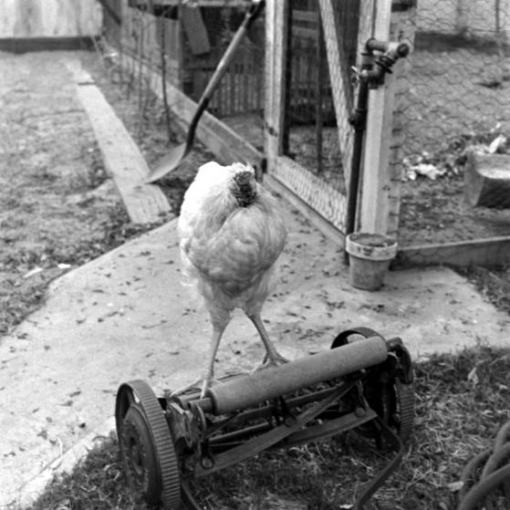

Mike the Headless Chicken (April 20, 1945 – March 17, 1947), also known as Miracle Mike, was a Wyandotte chicken that lived for 18 months after his head had been cut off. Although the story was thought by many to be a hoax, the bird's owner took him to the University of Utah in Salt Lake City, Utah to establish the facts.
Mike's Wikipedia Page
Mike's Career
Mike the Headless Chicken Festival